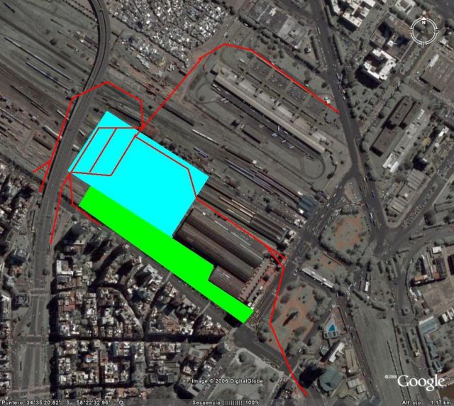
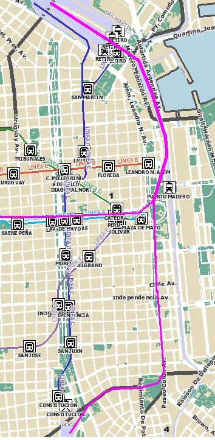
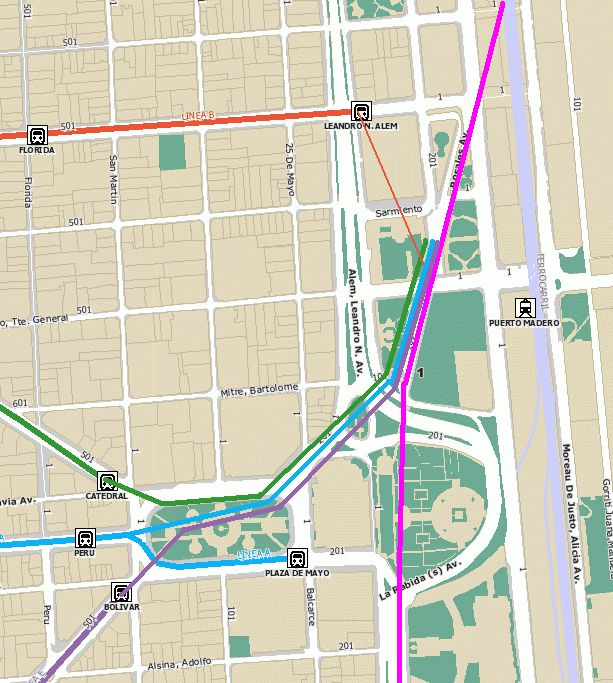
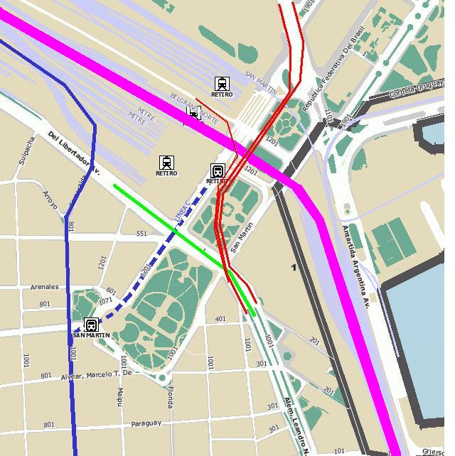
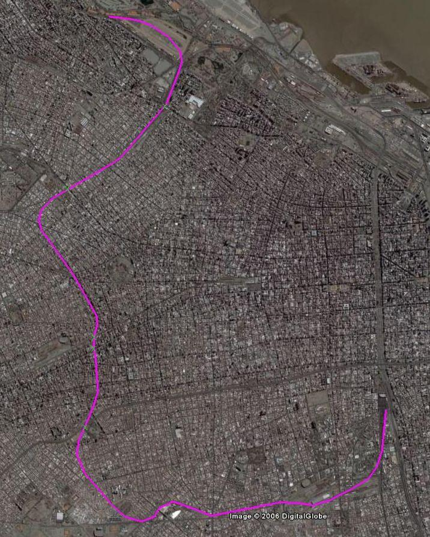

Vista del interior de la vieja estación de Atocha. La zona verde entre el pavimento y las palmas, es un estanque con peces y tortugas de agua.
La vieja estación de Atocha, justo al límite de la ciudad antigua, al final del Paseo del Prado con su famoso museo, es ahora un agradable oasis dentro de la trama urbana. Donde antes estaban las vías ahora es un amplio jardín semi-tropical con restoranes y cafeterías donde la vieja bóveda metálica hace de invernadero. Además de los viajeros que vienen y van de la nueva estación inmediatamente detrás, es habitual ver oficinistas comiendo un bocadillo sentados en los senderos que atraviesan la selva.
Vista del interior de la vieja estación de Atocha. La zona verde
entre el pavimento y las palmas, es un estanque con peces y tortugas
de agua.
La nueva estación, varias veces el tamaño de la vieja, se encuentra inmediatamente detrás, en lo que anteriormente era la playa de maniobras. Las vías de la nueva estación se encuentran soterradas. Algunas de ellas pasan bajo la vieja estación y llegan a la otra gran estación de Madrid, Chamartín, al otro extremo del Paseo del Prado que, a lo largo de su recorrido va cambiando de nombre.
El rediseño de este importante núcleo de transporte ha mejorado notablemente la zona. La nueva estación ha sido diseñada desde cero, sin estar condicionada por la estructura de la nueva, para integrar distintos medios de transporte en varios niveles. Los buses urbanos, que antes atascaban el tránsito frente a la vieja estación, ahora disponen de dársenas adecuadas. El movimiento de los pasajeros se hace, en muchos casos, en vertical entre los trenes soterrados, el metro (subte) aún más abajo, el transporte de superficie y las playas de estacionamiento por encima. La zona frente a la estación (actualmente en obras, por lo que no se aprecia demasiado) ha ganado espacio y habitabilidad, más aún contando con el Museo de Arte Reina Sofía y su nueva ampliación.
Es importante también la mejora en la circulación de pasajeros. Anteriormente, todos los pasajeros estaban obligados a trasbordar de sus trenes de corta distancia a los medios de transporte urbano. La conexión entre Atocha y Chamartín permite que los pasajeros ahora puedan elegir dónde hacen el trasbordo pues dicha conexión dispone de 2 estaciones intermedias, Recoletos y Nuevos Ministerios, la primera a un par de calles de la icónica fuente de la Cibeles, la segunda un núcleo donde convergen 3 líneas de metro, incluída la que llega al aeropuerto de Barajas, de tal manera que las opciones de trasbordo se multiplican, evitándose la alta concentración de pasajeros en un único lugar. Un esquema similar también se da en Barcelona, donde las líneas que antes terminaban en la estación de Sants ahora continúan soterradas bajo las avenidas Roma y Aragón, pasando por lo que a futuro será la estación del tren de alta velocidad de Madrid a Francia en la Sagrera, ofreciendo a los pasajeros múltiples posibilidades de trasbordar al metro y al transporte de superficie.
Imagino este esquema trasladado a Buenos Aires. Una nueva estación de Retiro desplazada hacia atrás, sobre la actual playa de maniobras, ubicada entre el final de la estación actual y la autopista Illía. La nueva estación, en varios niveles, tendría las vías de tren soterradas, el transporte público en una trama perpendicular por encima de los andenes de tal manera que el acceso a estos pueda hacerse en vertical. El transporte público podría continuar hacia la terminal de buses, actualmente tan aislada del resto de la ciudad. Por encima dos o más pisos de estacionamiento. Bajo las vías del tren, o en paralelo, una nueva estación de la línea C de subterráneo y la línea H. Todo esto retirado de la primera línea de la futura edificación sobre Av. Libertador, una zona que, además, ganaría mucho al estar tanto mejor comunicada con el resto.

Este diagrama sobre una foto aérea de la zona de Retiro muestra en
azul, la zona que ocuparía la nueva estación de Retiro. En rojo
los múliples accesos, entrando desde el ángulo izquierdo del bloque
celeste, viniendo desde la Av. Libertador, dirección NO, por encima de
esta avenida desde la 9 de Julio y saliendo hacia Retiro por la calle
Mujica, en dirección a la terminal de buses o, cruzando bajo la
autopista, nuevamente hacia Libertador y la 9 de Julio. El área
verde se zonificaría para edificación de oficinas con dependencia de
paso peatonal para la estación. La línea roja llegando a la Av. Alem
al pie de la imagen representa un túnel paralelo al que se comenta más
abajo.
Las vías soterradas continuarían bajo los terrenos entre la Av. Madero y Alicia Moreau de Justo, acercándose al microcentro a partir de Av. Corrientes, subiendo por la Av. Rosales pasando bajo la Plaza Colón inmediatamente al lado de la excavación de la vieja aduana y de allí por Paseo Colón hasta la plaza [] y de allí subir por la Av. Caseros hasta la estación Constitución. Bajo la plaza Colón existe un túnel de una única vía que conecta el puerto con las vías del Sarmiento. Este túnel no tiene suficiente capacidad de tráfico pero ofrece la posibilidad de oficiar de túnel de servicio para la construcción de un nuevo túnel de doble vía que también llegara a esta estación bajo la Av. Rosales. El tramo de ferrocarril entre Retiro y la estación bajo Rosales sería de cuatro vías, bifurcándose dos de ellas hacia Constitución, las otras hacia Once.

En magenta se muestra el trayecto del túnel uniendo las estaciones de
Retiro con Once y Constitución. El túnel tendría 4 vías entre
Retiro y la estación bajo la Av. Rosales y luego se dividiría en
sendos túneles de 2 vías, una hacia Once, el otro hacia
Constitución.
Finalmente, los túneles de los subtes de las líneas A, D y E que convergen en la estación Plaza de Mayo del subte A, podrían extenderse pasando entre la Casa Rosada y el Banco Nación para llegar a esta nueva estación, suprimiendo la estación Plaza de Mayo del subte A, que bloquearía el paso del túnel de la línea E. Un pasaje peatonal conectaría con la estación Alem del subte B.

Nueva estación bajo la Av. Rosales, en pleno centro. En
magenta, los túneles del enlace Retiro-Constitución, faltando el ramal
Retiro-Once, que corre más o menos paralelo a la línea A, en
celeste. Las líneas A, D y E se prolongan por debajo de
Plaza de Mayo y continuando hasta la estación Rosales. Se
elimina la estación Plaza de Mayo del subte A. La línea B
se conectaría con esta estación mediante un pasaje peatonal. Nótese,
sin embargo, que la línea B es la única que usa la misma alimentación,
ancho de vía y gálibo de los ferrocarriles de superficie, por lo que
un empalme con ella no sería descartable.
El movimiento de pasajeros se hace muchísimo más efectivo. Como se ha dicho, se evita que todo el mundo esté forzado a trasbordar en las estaciones cabecera. La línea C, permanentemente saturada, vería reducido su volumen de pasajeros pues actualmente son muchos los que, tanto en Retiro como en Constitución, salen de los trenes para trasbordar a esta línea que, de todas formas, en muchos casos no es su destino final, pues muchos trasbordarán nuevamente a las líneas radiales. También se reduce el tránsito de superficie que ahora se concentra demasiado en las estaciones cabecera. Adicionalmente se mejora el aprovechamiento de los trenes suburbanos, que actualmente pierden mucho tiempo en las cabeceras de Retiro, Constitución y Once debiendo esperar el recambio total del pasaje y el cambio de sentido de circulación. Con esta conexión, los recorridos de los trenes suburbanos podrían ser, por ejemplo, Moreno - Tigre o San Isidro - Adrogué, de tal manera que en ningún caso los trenes pasarían varios minutos estacionados, perdiendo tiempo de utilización y ocupando espacio en las cabeceras porteñas.
Esto va en contra de la idea tan popular de suprimir el acceso ferroviario a la Capital, terminando todos sus ramales en los límites de la Capital y extendiendo los subtes hasta allí. Esto deja de lado un hecho importante, el tamaño de la ciudad. Dado la enormidad de Buenos Aires, se necesita dentro mismo de la ciudad, dos redes de transporte, una rápida, de pocas paradas bien espaciadas entre si y otra de tráfico local. Esto lo conocen bien quienes viven en las Barrancas de Belgrano, más o menos equidistantes del tren y del subte. Si quieren ir al centro, digamos, al obelisco, tienen ahora dos alternativas, el subte D o el tren a Retiro y combinar con el subte C. Esta última opción es más rápida pues el tren les salva de todas las paradas intermedias.
A diferencia de la prolongación de las líneas de subte, toda esta obra puede hacerse sin entorpecer el tránsito actual. Los tiros de acceso a los nuevos túneles estarían todos ya fuera en las actuales playas de maniobra de los trenes de Retiro y Constitución, al costado de la Av Madero, bajo la Av. Rosales, la plaza Colón, los jardines de la comandancia del Ejército, las plazoletas de la Av. Paseo Colón, Parque Patricios o la Av. Caseros, que en ese tramo no tiene demasiado tránsito. En la conexión con la línea del Sarmiento, las obras se podrían hacer a través del actual túnel bajo Rivadavia.
No es necesario ser demasiado imaginativo respecto del posible uso del actual edificio de la estación Retiro, seguramente habrá cantidad de empresarios gustosos de convertir ese noble edificio en centro comercial. Al igual que en Atocha, la parte de los andenes se podría hacer un gran espacio verde, cambiando las planchas opacas del techo por otras traslúcidas y haciendo un gran parque tropical debajo. La plaza frente a la estación se ampliaría al eliminarse las dársenas con las paradas para transporte público.
Para aliviar el tránsito vehicular en la zona, particularmente el nudo de circulación que forman las avenidas Alem, del Libertador, Santa Fé, Madero y Antártida Argentina se podrían hacer varios túneles vehiculares. Uno, partiendo del Alem tras su cruce con M.T. de Alvear, con dos carriles, pasaría a un costado de la Torre de los Ingleses y tras cruzar por debajo de la Av. Antártida Argentina, se pondría paralelo a la misma y afloraría tras la Av. de los Inmigrantes. Otro túnel haría el recorrido opuesto. Un tercer túnel podría salvar el tramo entre las plazas San Martín y Fuerza Aérea, evitando ambos semáforos. Si bien actualmente tal túnel se encontraría con el problema del túnel del subte C, hay que notar que este túnel perdería su razón de ser si la estación ferroviaria se desplaza hacia el norte, la línea C continuaría su recorrido por la calle Esmeralda hasta cruzar la Av. del Libertador, poniéndose en paralelo a las vías del ferrocarril y empalmando con la futura prolongación de la línea H que viene bajando de Av. Pueyrredón.

Túneles viales en Retiro. En rojo los túneles vinculando Alem
con Antártida Argentina. El tramo en dirección sur, entre Mujica y
Alem tendría una carril adicional para el transporte público que viene
de la nueva estación. En azul el trazado de la línea C de
subterráneo, punteado el actual tramo que se eliminaría en favor del
nuevo que va hacia la nueva estación y que empalmaría con la línea H.
En verde, el túnel que conectaría Alem con del Libertador, pasando por
debajo de los anteriores (aunque el de la línea C quedara en
desuso). En magenta el túnel de conexión entre Retiro y las
otras estaciones. No se indican el resto de las vías para
los andenes de la nueva estación.
Otra lección del transporte en Madrid es la existencia de un lazo de vías ferroviarias dentro de la ciudad, permitiendo que los transbordos entre trenes y metro se hagan en más de un punto. Esto se podría hacer en Buenos Aires mediante el que denomino 'enlace oeste'.

La línea magenta muestra el enlace oeste desde la estación de
Barrancas de Belgrano en el norte hasta Constitución en el sur.
Las X en verde en su recorrido muestran, de norte a sur, los empalmes
con las líneas de subte D (Palermo), B (Dorrego), ferrocarril
Sarmiento (Caballito), subte A (Primera Junta) y línea E (Emilio
Mitre).
A pesar de lo extenso del recorrido que se muestra, mucho de este trazado es sobre líneas ya existentes o ramales abandonados y donde es necesario hacer túneles, se han buscado lugares donde los tiros de acceso a la obra no afecten al tránsito de superficie. Partiendo de Belgrano, el nuevo ramal se separa y se soterra, pasando por debajo del hipódromo, tramo que puede hacerse a cielo abierto, pasando por debajo de la Av. Dorrego y las vías del ramal a J.L. Suárez. del Mitre y las del San Martín y Av. Libertador, para comenzar el ascenso para nivelarse con la vía del San Martín y cruzar Av. Santa Fé donde es posible trasbordar con la línea D en Palermo. De allí corre en paralelo o por sobre la misma vía hasta acercarse a Av. Córdoba, donde debería enterrarse para cruzar por debajo de esta y continuar así hasta debajo de Corrientes, donde permite el trasbordo con la línea B (Dorrego). Allí se separa del actual ramal en uso para continuar enterrada bajo la curva abandonada que cruza Warnes y empalma con Honorio Pueyrredón, una avenida ancha y subutilizada, que permitirá la construcción del túnel sin entorpecer el escaso tránsito. Allí continúa hasta, por un lado, empalmar con las vías del Sarmiento, pudiendo alcanzar la actual estación Caballito y por otro cruzando las mismas, permitir el transbordo con la actual cabecera de la línea A en Primera Junta. De allí al Parque Chacabuco donde se puede trasbordar con la línea E (estación Emilio Mitre) y continuando por Curapaligüe para empalmar con la ferrocarril Belgrano Sur llegando a la estación Saenz, de la cual se llega fácilmente a Constitución pasando por la estación Buenos Aires y haciendo un empalme, actualmente faltante, con la línea del Roca.
Se debe sumar la cuestión de la diferente alimentación eléctrica, dado que el Roca usa un sistema distinto del resto y en el enlace oeste, la diferencia de ancho de vía en algunos segmentos. Como alternativa al enlace oeste, el tramo entre Palermo y Parque Chacabuco puede hacerse como subte, ofreciendo más paradas intermedias, dejando un futuro enlace ferroviario por el oeste uniendo en paralelo a la Av. Gereral Paz partiendo del Belgrano Sur, tras la estación Villa Lugano, con posibilidad de trasbordo con el Sarmiento (habría que ver la posibilidad de hacer túneles de empalme en una zona tan construída) en Liniers y hasta el ramal de J.L. Suárez del Mitre en Villa Pueyrredon, uniendo así una cantidad de zonas que no tienen buena comunicación en transporte público entre sí.
Finalmente, otra idea que puede trasladarse de Madrid a Buenos Aires es la conexión al aeropuerto. Es impensable llevar todo el tráfico aéreo del Aeroparque a Ezeiza sin proveer un transporte masivo al aeropuerto. Con construir un ramal desde la estación de Ezeiza (pueblo) al aeropuerto, se podrían ofrecer servicios directos, sin paradas desde Constitución al aeropuerto. Podemos agregar a esto que las aerolíneas puedan tener sus mostradores de facturación en Constitución, como las hay en la estación Nuevos Ministerios en Madrid o en Victoria Station en Londres, para que los pasajeros puedan abordar los trenes lanzadera sin más que el equipaje de mano.